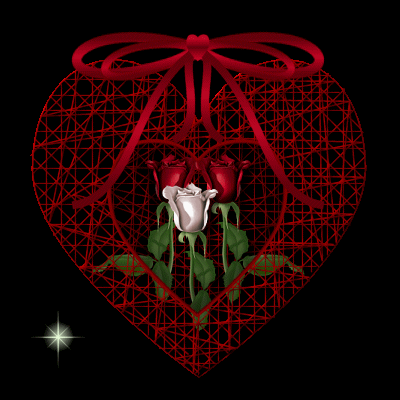
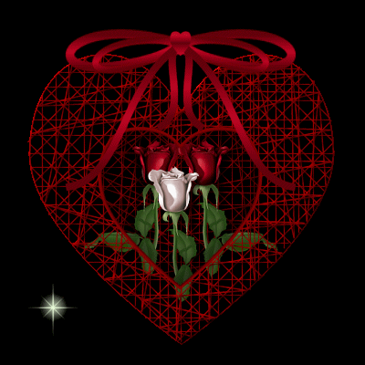
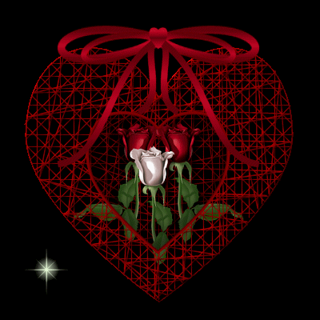

THE THIRTIETH DAY
I am not sure, Messieurs, said the beauteous storyteller, whether you have heard of the caprice, quite as unusual as dangerous, for which the Comte de Lernos is celebrated, but my several liaisons with him having afforded me a thorough acquaintance of his maneuvers, and as I found them most extraordinary indeed, I believe they ought to be included amongst the delights you have ordered me to detail
The Comte de Lernos' passion to lead into evil as many girls and married women as he is able, and apart from the books he employs to seduce them, there is truly no sort of device he will not invent to deliver them up to men; he either exploits their secret yearnings by uniting them with the object upon whom they only think longingly, or he finds them lovers if such they are lacking
"He has a house devoted to nothing else, and in it all the matches he has made are tested when the individuals concerned come to grips"
He unites them, guarantees them freedom from intrusion, provides them with all the facilities needed for recreation, and then goes into an adjoining chamber to enjoy the pleasure of spying upon them while they are in action
But the point to which he multiplies these disorders simply defies belief, nor would one credit an account of the immense number of obstacles he is willing to surmount in order to form these little marriages
He has associates in nearly every convent in Paris and amongst a vast quantity of married women, and this army is led by a general of such great skill that not a day passes but at least three or four little skirmishes are fought in his house
Never does he fail to watch the voluptuous jousts—without the participants suspecting his presence—but once he has gone to take up his observation post at the hole, as he stands watch all alone, no one knows how he proceeds to his discharge, nor what its character is; nothing but the fact is known, and that is all; I thought none the less that it was worthy of being mentioned to you
"The fantasy of the elderly Président Desportes will perhaps prove more amusing to you"
Fully informed of the etiquette observed at the home of this habitual debauchee, I arrive at his house toward ten o'clock in the morning and, perfectly naked, I present my buttocks to be kissed; he is seated in an armchair, very grave, very solemn, and the first thing I do is fart in his face
My président is irritated, he gets to his feet, seizes a bundle of switches he has close at hand, and falls to pursuing me; my first impulse is to get out of his way
"Impudent hussy," says he, chasing after me all the while, "I'll teach you to come to my home to behave in this outrageous fashion
"""
I'm to flee, he's to follow on my heels; I finally gain a narrow alley, I take cover in an impregnable retreat, but, lo! there he is, he's somehow managed to get at me
The président's threats and
"imprecations redouble as he sees he has me trapped; he brandishes the switches, threatens to use them upon me: I creep into a corner, cower there, put on a terrified air, I shrink to the size of a mouse; this terrified, groveling attitude of mine finally awakes his fuck, and the roué squirts it over my breasts while shouting with pleasure"
"What! Do you mean to say he didn't give you a single lick with the switches?" the Duc demanded
"He didn't bring them within a yard of me," Duclos replied
""
"A very patient individual, that one," Curval remarked; "my friends, I believe we all agree that we are somewhat less so when we have in our hands the instrument Duclos mentions
"
"But you need only a small amount of patience, Messieurs," said Champville, "for I shall shortly present to you other samples of the same breed, but they'll be rather less mild tempered than Madame Duclos' président
"""
And Duclos, observing that silence had succeeded these comments, saw she could continue with her stories, and proceeded in the following manner:
"Soon after this adventure had befallen me, I went to the town house of the Marquis de Saint-Giraud, whose fantasy consisted in seating a naked woman upon a children's swing and having her swing to a great height, back and forth"
Each time you pass by his nose, he's waiting for you, and you've got either to let fly a fart at him or expect a slap upon your ass
I did my best to satisfy him; I received several slaps, but also gave him some overpowering farts
"And the Marquis having finally discharged after an hour of this monotonous and fatiguing ceremony, the swing was brought to a halt, and my audience came to an end"
""
About three years after I had become the mistress of Fournier's establishment, a man came to make an unusual proposal to me: he wished me to find libertines who would amuse themselves with his wife and daughter, the only condition being that he be hidden in a place whence he could observe everything that transpired
"Not only would whatever money I might earn from their employment be mine, but, he went on, he planned to give me an additional two louis for every encounter I could arrange for them; and there was only one final condition to the bargain: for his wife's partners he wished none but men of a certain taste, and for his daughter, men addicted to another kind of whimsy: his wife's men were all to shit upon her breasts, and the procedure to be observed with his daughter involved having the men raise her skirts, broadly expose her behind in"
front of the hole through which he would be doing his spying, and then discharge into her mouth
"He would surrender the merchandise for the said passions, but for no others"
"After having made this gentleman promise to accept all responsibility in the event his wife and daughter brought complaint for having been made to come to my house, I agreed to all he wanted and in my turn promised that the two ladies would be furnished in strict accordance with his instructions"
He arrived with his wares the very next day: madame was a woman of thirty-six, not very pretty, but tall and majestically formed, with a great air of sweet mildness and of modesty; her daughter was fifteen years old, blond, rather inclining toward heaviness, with the most tender, most winning countenance in all the world…
"Indeed, Monsieur," quoth his wife, "you have us do strange things…"
"I know, my dear, I know," said the lecher, "and it mortifies me, but so it must be
"Accept your lot, do as you're told, there's nothing for it, I shall not give over"
And if you balk in the slightest way at the propositions and the actions we are going to submit you to—you, Madame, and you, Mademoiselle—I shall tomorrow convey you to a place I know, and it is highly unlikely you'll ever return alive from it
"
Wherewith the wife shed a tear or two; as the man for whom I intended her was waiting, I requested her to pass without further delay into the chamber I had set aside for their bout; mademoiselle would remain in another room with one of my girls, she would be perfectly safe there and would be notified when her turn had come
At this cruel moment there were a few more tears, and it seemed clear to me that this was the first time the brutal husband had required such a thing of his wife; unhappily, her debut was arduous, for aside from the baroque taste of the individual to whom I was surrendering her, he was an imperious and brusque old libertine who would surely not treat her with any excess of courtesy or consideration
"That will do, no more tears," said the husband
"Bear in mind that I am watching your conduct, and that if you do not give ample satisfaction to the thoughtful gentleman who is going to take you in hand, I will come in myself and force you to do his bidding
"
She enters the arena, the husband and I go into the neighboring room from which we are to watch it all
It is difficult to imagine the point to which this old scoundrel's imagination was excited by contemplating his miserable wife being made a victim of some stranger's brutality; he was thrilled by each thing she was forced to do; that poor humiliated woman's modesty and candor beneath the atrocious assaults of the libertine engaged to exercise her, composed a delicious spectacle for her husband
But when he saw her thrown brutally to the floor, and when the old
ape to whom I had delivered her shit upon her chest, and her husband saw the tears, beheld the horrified shudders of his wife as she first heard proposed and then saw this infamy executed, he could restrain himself no longer, and the hand with which I was frigging him was straightway soaked with fuck
This first scene ended at last, and if it had afforded him pleasure, it was as nothing compared to the climax produced by the second
It was only with great difficulty, and above all with numerous and grave threats, that we succeeded in getting the young lady to enter the ring; she had witnessed her mother's tears but knew nothing of what had been done to her
""
The poor little girl raised all kinds of objections; we finally helped her make up her mind
The man to whom I turned her over was fully instructed of all that was required to be done: he was one of my regular clients whom I delighted with this windfall and who, to express his gratitude, consented to all I prescribed
"Oh, the lovely ass!" cried the libertine father once his daughter's stud displayed her entirely naked
"Oh, sacred Jesus, what adorable buttocks!"
"Gracious!" I exclaimed, "am I to take it that this is the first time you have set eyes on them?"
""Yes, indeed it is," said he, "I required this expedient to enjoy the spectacle; but if 'tis the first time I see that superb ass, you may rest assured it shall not be the last"
"
I frigged him at a lively pace, he grew ecstatic; but when he saw the appalling things that young virgin was being forced to submit to, when he saw a consummate libertine's hands straying over that extraordinary body which had never before suffered such fondlings, when he saw her compelled to sink to her knees, open her mouth, when he saw a fat prick introduced into it, and saw that engine discharge inside, he tottered backward and, swearing like one possessed, shouting that he'd never in his life tasted any pleasure as keen as this, he left certain proof of his statements between my fingers
"Their adventure had drawn to a conclusion, the two poor women retreated, weeping abundant tears, and the husband, but too enthusiastic over the drama they had enacted for him, doubtless found the means to persuade them to provide him with additional performances, for I received that family at my house for more than six years and, always following the orders the husband gave me, I made those two unlucky creatures acquainted with practically all the different passions I have mentioned in the course of my thirty days of storytelling; there were, to be sure, ten or twelve of the passions they had no opportunity to satisfy, because we did not practice them in my house"
"Oh, yes," said Curval, "there are many ways to prostitute a wife and a daughter
As if these bitches were made for anything else! Are they not born for our pleasures, and from that moment
"onward, must they not satisfy them at no matter what price? I've had a quantity of wives," said the Président, "and three or four daughters of whom, thank God, I've only one left, and if I'm not mistaken Monsieur le Duc is fucking Mademoiselle Adelaide at this very instant; but had any one of those creatures ever balked at being prostituted, in any of the numerous manners of prostitution I regularly submitted them to, may I be damned alive or condemned never to fuck anything but cunts for the rest of my life—which is worse—if I'd not have blown their bloody brains out"
"
"Président, your prick is in the air again," said the Duc; "your fucking remarks always betray you
"
"My prick in the air? No," the Président said, "but I am on the verge of getting some shit from our dear little Sophie, and I have high hopes her delicious turd will precipitate something
"Oh, upon my soul, even more than I'd suspected," said Curval, after he'd gobbled up the hash; "by the good God I'd like to fuck, I believe that my prick is taking on some consistency"
Who from amongst you, Messieurs, would like to accompany me into the boudoir?"
"I'd be honored," said Durcet, dragging along Aline, whom he had been pawing steadily for an hour
"And our two libertines, having summoned Augustine, Fanny, Colombe, Hébé, Zélamir, Adonis, Hyacinthe, and Cupidon, and enlisted Julie and two duennas, Martaine and Champville, Antinoüs and Hercule, absented themselves for half an hour, at the end of which they returned triumphant, each having yielded up their vital liquor to the sweetest excesses of crapulence and debauchery"
""
""Move on," Curval said to Duclos, "give us your final tale, dear friend"
"And if it manages to make this prick of mine dance up again, you shall be able to congratulate yourself upon having wrought a miracle, for in faith, it is at least a year since I've lost so much fuck at a single sitting"
On the other hand, it is true that…"
""Very well," the Bishop interrupted, "that will do; if we listen to you, we will hear something much worse than the passion Duclos is likely to describe to us"
And so, since that would be to retreat from the stronger to the weaker, permit us to bid you be silent and listen instead to our storyteller
"""
That gifted whore thereupon terminated her recitations with the following passion: The time has finally arrived, my Lords, to relate the passion of the Marquis de Mesanges to
whom, you will recall, I sold the daughter of the unfortunate shoemaker, Petignon, who perished in jail with his wife while I enjoyed the inheritance his mother had left for him
As 'twas Lucile who satisfied him, you will allow me to place the story in her mouth
"I arrive at the Marquis' mansion," that charming girl told me, "at about ten o'clock in the morning
As soon as I enter, all the doors are shut
"'What are you doing here, little bitch?' says the Marquis, all afire
'Who gave you permission to disturb me?'
"And since you gave me no prior warning of what was to happen, you may readily imagine how terrified I was by this reception
"'Well, take off your clothes, be quick about it,' the Marquis continues
'Since I've got my hands on you, whore, you'll not get out of here with your skin intact… indeed, you're going to perish—your last minutes have arrived
'
"I burst into tears, I fall down at the Marquis' feet, but nothing would bend him
And as I was not quick enough in undressing, he himself tore my clothes off, ripping them away by sheer force
"But what truly petrified me was to see him thrown them one after another into the fire"
"'You'll have no further use for these,' he muttered, casting each article into a large grate
'No further need for this mantelet, this dress, these stockings, this bodice, no,' said he when all had been consumed, 'all you'll need now is a coffin
'
"And there I was, naked; the Marquis, who had never before seen me, contemplated my ass for a brief space, he uttered oaths as he fondled it, but he did not bring his lips near it
"'Very well, whore' said he, 'enough of this, you're going to follow your clothes, I'm going to bind you to those andirons; yes, by fuck, yes indeed, by sweet Jesus, I'm going to burn you alive, you bitch, I'm going to have the pleasure of inhaling the aroma of your burning flesh
'
""And so saying he falls half-unconscious into an armchair and discharges, darting his fuck upon the remnants of my burning clothes"
He rings, a valet enters and then leads me out, and in another room I find a complete new outfit, clothes twice as fine as those he has incinerated
"

That is the account of it I had from Lucile; it remains now to discover whether 'twas for that or for worse he employed the girl I sold him
""For something far worse," said Desgranges; "I am glad you have introduced the Marquis to their Lordships, for I believe I too shall have something to say about him"
"
"May it be, Madame," Duclos said to Desgranges, "and you, my amiable companions," she added, speaking to her two other colleagues, "may it be that you speak with greater energy than have I, with livelier images, brighter diction, superior wit, and more persuasive eloquence
'Tis now your turn, I have done, and I would but beseech Messieurs to have the kindness to forgive me if I have perchance bored them in any wise, for there is an almost unavoidable monotony in the recital of such anecdotes; all compounded, fitted into the same framework, they lose the luster that is theirs as independent happenings
"
With these words, the superb Duclos respectfully saluted the company, bowed, and descended from her throne; she next went from alcove to alcove and was generally applauded and caressed by all the friends
"Supper was served, Duclos was invited to sit at the table, a favor which had never before been accorded to a woman"
Her conversation was quite as agreeable as her storytelling had been, and by way of recompense for the pleasure she had given them, Messieurs named her to be the governor-general of the two harems, and the four friends also made the promise, in an aside, that no matter what the extreme treatment to which they might expose the women in the course of the sojourn, she would always be dealt with gently, and very certainly taken back with them to Paris, where the society would amply reward her for the trouble she had gone to in order to help Messieurs procure themselves a little good cheer
She, Curval, and the Duc so completely besotted themselves at supper that they were practically incapacitated and barely managed, with the expense of much effort, to reach the orgies, which they soon left, allowing Durcet and the Bishop to carry on alone, and betook themselves to the remote boudoir; Champville, Antinoüs, Bum-Cleaver, Thérèse, and Louison accompanied them, and one may be perfectly confident that they uttered and had done to them at least as many horrors and infamies as, at their end, their two more sober friends were able to invent
Everyone repaired to his bed at two in the morning, and 'twas thus the month of November ended, thus came to a close the first phase of this lubricious and interesting holiday, for whose second part we will not keep the public waiting if to our consideration it has kindly received what we have chronicled so far
MISTAKES I HAVE MADE2
I have been too explicit, not sufficiently reticent, about the chapel activities at the beginning; must not elaborate upon them until after the stories in which they are mentioned
Said too much about active and passive sodomy; conceal that until the stories have discussed it
I was wrong to have made Duclos react strongly to the death of her sister; that doesn't sort with the rest of her character; change it
If I said Aline was a virgin upon arrival at the château, that was an error: she isn't, and could not be
The Bishop has depucelated her in every sector
""
And not having been able to reread all this, there must be a swarm of other mistakes
"When later I put the text in final order, I must be particularly careful to have a notebook beside me at all times; I'll have to put down very exact mention of each happening and each portrait as I write it; otherwise, I'll get horribly confused because of the multitude of characters"
For the Second Part, begin with the assumption Augustine and Zéphyr are already sleeping in the Duc's bedchamber in the First Part; likewise Adonis and Zelmire in Curval's, Hyacinthe and Fanny in Durcet's, Céladon and Sophie in the Bishop's, even though none of them has been deflowered yet
2 As Sade notes, the speed with which he wrote the final draft of The 120 Days, and because he was unable to reread and correct his manuscript, resulted in a number of minor discrepancies in dates, characters, and situations, which the careful reader will doubtless discover
None the less, given the large cast of characters, and the complexity of rules and procedures, his accuracy of detail is remarkable
—Tr


 
